Building Hapax: An Offline-First Dictionary App
24/02/2026
A walkthrough of Hapax: an offline-first personal dictionary app.
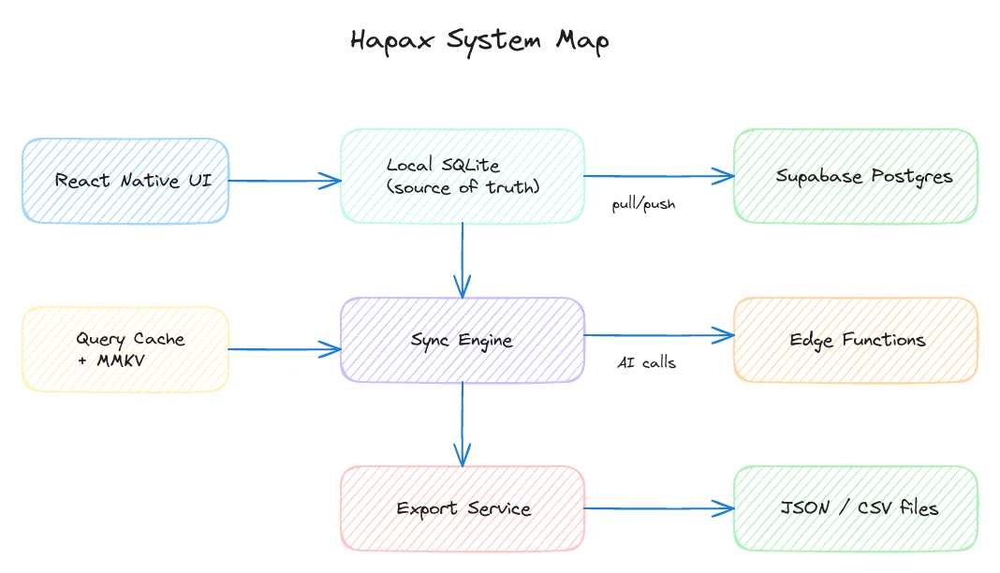
Hapax is a small dictionary app I built for myself. I try to write down/look up every word I come across that I don't know. I've kept a word list for years as a basic csv and google sheet, but I've always wanted to experiment with it in an app format.
It's built as a local-first app with an optional sign-in, practical sync features, and lightweight AI helpers to fill in details and enrich entries.
The app is designed to save first and fill-in later via entry or AI enrichment. This post is a straightforward tour of how it works.
Adding Words Flow
I wanted a quick capture flow that does not depend on a network and does not force me to fully edit every entry in the moment.
So the core idea is simple: add the word now, enrich it later.
Requirements that helped shaped architecture
Hapax is iOS-first for now. Android and Expo web are possible, and web will probably land next (see Adding Web to Hapax).
The main requirements were straightforward: offline support, fast local interactions, and optional account usage instead of hard auth gating.
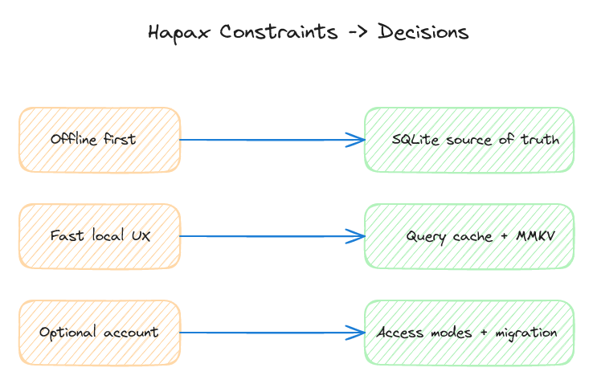
System map in one screen
UI writes to local SQLite first. Sync reconciles with Supabase when available. AI helpers run through edge functions and feed back into normal data flow.
SQLite as the source of truth
All core screens read from SQLite. That keeps search and list views fast and keeps the app usable when offline.
The main local tables are entries, tags, entry_tags, and sync_state. Sync metadata sits with rows so pending work is easy to track.
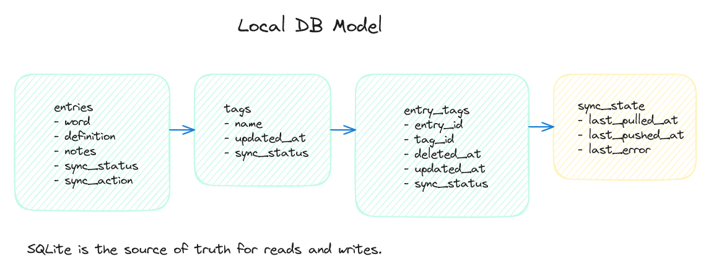
Auth is not access mode
A useful design choice was separating sign-in state from app access.
TS
type AccessMode = "supabase" | "local" | "none";This means someone can use local mode immediately, then sign in later if they want sync across devices.
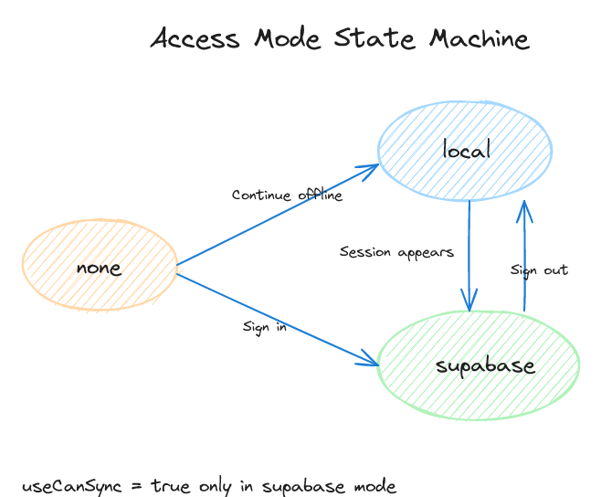
Local mode migration on sign-in
Local mode rows are stored with user_id as null. On sign-in, those rows are reassigned to the signed-in user.
Tag collisions are merged by name, migrated rows are marked pending, and the process is safe to retry.
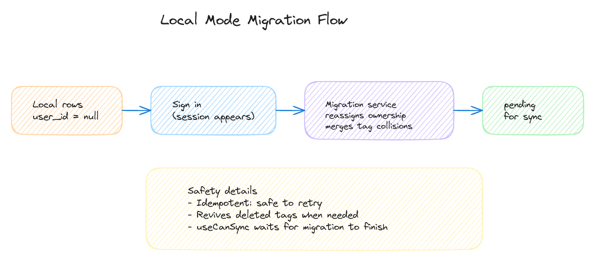
Sync engine deep dive
Sync runs one job at a time per user. That avoids overlapping transactions and keeps behavior predictable.
The flow is push local pending changes first, then pull remote updates, then update cursors. If something fails, retries use backoff.
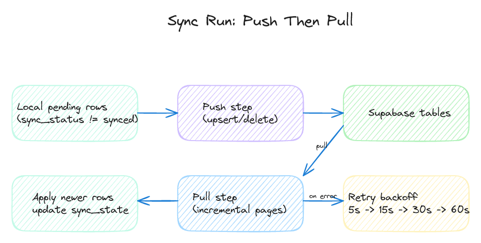
Conflict policy and tradeoffs
Conflict handling is intentionally simple: newer updated_at wins.
It is not perfect, but it is easy to understand and keeps sync logic small enough to maintain.
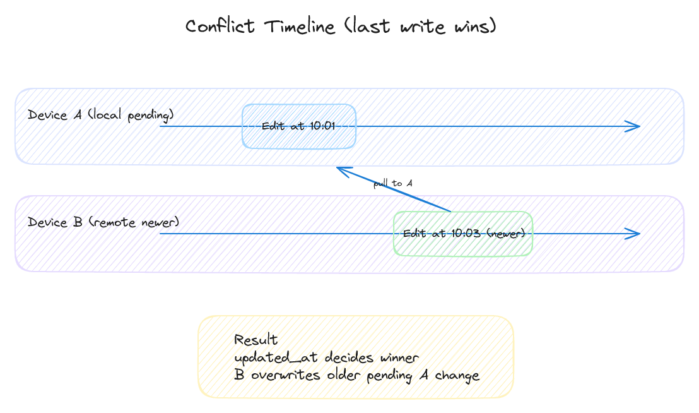
Query layer and cache hygiene
TanStack Query handles cached reads. MMKV persists cache between launches.
When access mode or user changes, cache hygiene clears old context and invalidates key queries.
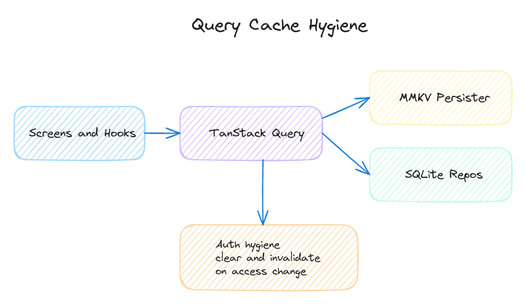
Entry lifecycle end-to-end
Create, edit, tag updates, favorite toggles, and soft delete all start as local writes.
Rows are marked pending and synced later, so UI actions stay fast without waiting on network calls.
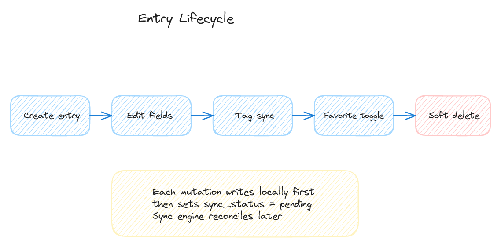
AI enrichment flow
Enrichment is optional. It can fill fields like definition, etymology, notes, and tags. I've been really happy with how this is working so far!
The app uses a sync-safe path: create local entry, sync if needed, call edge function, pull updates, refresh queries.
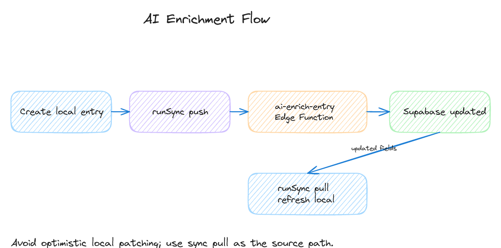
AI suggestions flow
Suggestions are user-triggered and cached server-side.
A hash of entry content and tags is used to decide whether cached suggestions can be reused or regenerated.
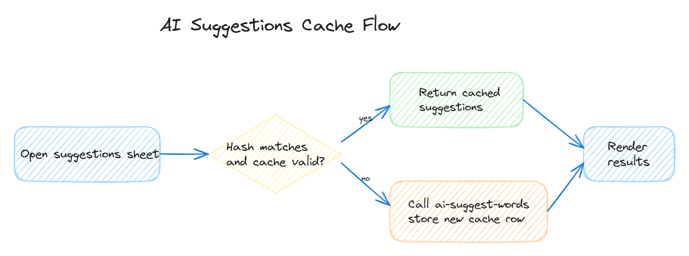
Export and portability
Exports are local and simple: JSON or CSV from local data. This way I can always go back to my original data and workflow if needed.
Web uses file download, native uses the share sheet. No server export pipeline is required.
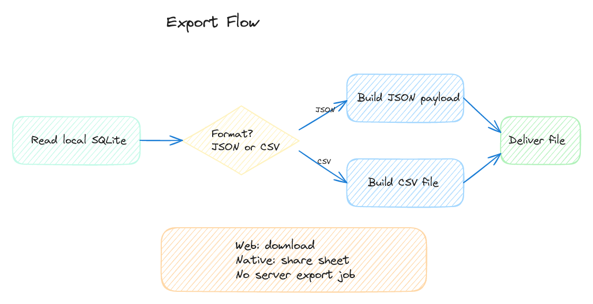
Closing thoughts
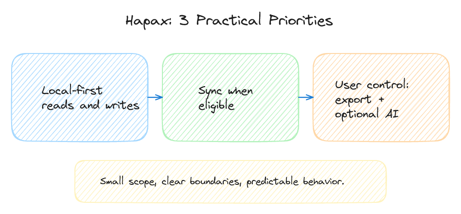
Hapax is intentionally simple. The main goal is to make word capture easy, with optional sync and optional AI on top. Altogether, it's working really well for my use cases. It's available on TestFlight, but probably won't make it to the App Store.
Thanks for reading!